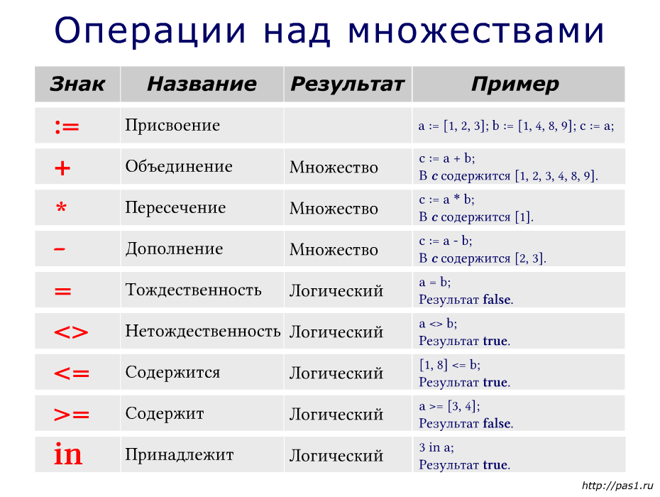

| Тема 2. Множества в Pascal | ||
| Назад | ||
|
Множество - это неупорядоченная структура данных, в которой каждое значение может быть представлено только одни раз. В Pascal множества обладают рядом особенностей. Все элементы одного множества должны принадлежать одному и тому же базовому типу. В качестве базового типа должен выступать порядковый тип, но не каждый. Размер множества в Паскале ограничен предельно допустимым количеством элементов. Во множествах допускаются только такие элементы, порядковые значения которых в их базовых типах не выходят за границы 0..255. Для целочисленных множеств это означает, что в них могут присутствовать только числа от 0 до 255. Отрицательные элементы во множествах не допускаются.
Поэтому базовым типом не может выступать, например, Объявление множествВ математике для обозначения множества используют фигурные скобки, например {4, 7, 12}, в Паскале — квадратные, например [1, 3, 5]. Порядок элементов во множестве не имеет значения. Так множества [3, 6, 9] и [9, 3, 6] одинаковы. По форме записи объявление переменной типа множество сходно с объявлением одномерного массива:
Например, объявление переменной ch как
множества с базовым типом Можно сначала объявить тип множества, а потом использовать его для объявления переменных: Часто в качестве базового типа используются перечисления и диапазоны: Объявление переменной-множества не присваивает ей набора значений. Построение множестваЧтобы во множестве появились элементы, необходимо выполнить оператор присваивания, в левой части которого стоит имя переменной-множества, а в правой — конструктор множества или некоторое выражение над множествами. Конструктор множества — это заключенный в квадратные скобки перечень элементов, разделенных запятыми. В качестве элементов могут использоваться диапазоны значений: Следует помнить, что при задании множества порядок его элементов безразличен, но при задании диапазона такой порядок важен. Множество, в котором нет элементов, называется пустым (или нуль-множеством). В языке программирования Паскаль обозначается квадратными скобками, между которыми нет элементов: Множество может быть объявлено типизированной константой, для чего в описании после знака равенства следует указать конструктор множества. Например:
Конструируя множества, можно использовать и переменные при условии,
что их текущие значения попадают в диапазон базового типа множества.
Так, если ch1 и ch2 имеют
тип В результате получится множество ['A', 'K', 'M']. Вывод элементов множестваВ Pascal элементы множества нельзя вводить и выводить. Для организации их ввода-вывода следует использовать вспомогательные переменные. В то же время можно использовать множества как элементы типизированных файлов. Результат выполнения: Операции над множествами
 Объединение, пересечение и разность множествНад множествами выполнимы объединение (+), пересечение (*) и разность (-). Объединение двух множеств A и B (A + B) – это новое множество, состоящее из элементов, принадлежащих множеству A или B, либо тому и другому одновременно.
Результат: Пересечение двух множеств A и B (A * B) – это множество, состоящее из элементов, одновременно принадлежащих множествам A и B.
Результат: Разность (дополнение) множеств A и B (A - B) – это новое множество, состоящее из элементов множества A, не вошедших в множество B. Используя операции объединения, пересечения и разности, можно добавлять элементы к множествам или удалять их. Для вставки и удаления элементов при работе с множествами в Pascal введены две процедуры: include(имя_множества, элемент)
exclude(имя_множества, элемент)
Первая из них позволяет выполнить добавление одного элемента в указанное множество, а вторая удалить. Например: Операции сравнения множествНад множествами можно выполнять четыре операции сравнения: =, <>, >=, <=. Два множества A и B равны (A = B), если каждый элемент множества A является элементом множества B и наоборот. Два множества A и B не равны (A <> B), если они отличаются хотя бы одним элементом. Другими словами, операции = и <> используются для проверки эквивалентности: два значения переменной типа set считаются равными, если они состоят из одних и тех же элементов.
[1, 3] = [3, 1] возвращает true, Множество A является подмножеством множества B (A <= B, или B >= A), если каждый элемент из A присутствует в B.
Операции >= и <= используются для проверки принадлежности одного
множества другому: так, если множество a содержится
во множестве b,
то [1, 2] <= [1, 2, 3] дает true
Пустое множество [ ] содержится во всех множествах, т.е. всегда in - операция проверки принадлежности элемента множеству
Имеется возможность выяснить, принадлежит ли данный элемент
некоторому множеству. Для этого служит операция
Замечание 1. Чтобы проверить, является ли значение n цифрой,
удобно использовать операцию
Замечание 2. Результат операции
Если присвоить x число,
большее максимального значения 50 (например,
Все операции сравнения множеств, а также операция Приоритеты операций над множествамиВ сложных выражениях над множествами операции имеют следующие приоритеты:
|
||
| Конспект подготовлен Бакулиным А. М. 2008 год. | ||